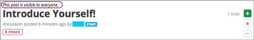
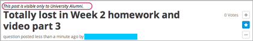
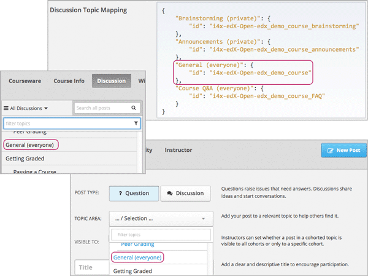
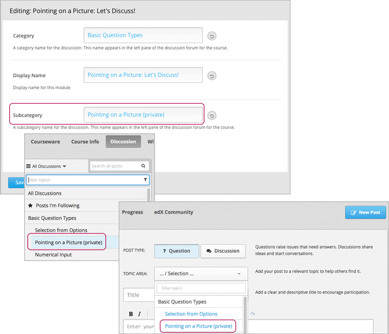
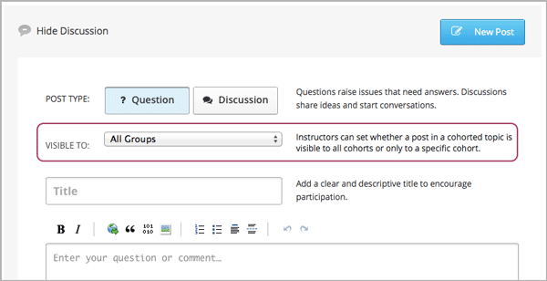

在带有学生队列的课堂（下简称“分队课堂”）中管理讨论项目 分队功能启用后，每条帖子都会有个提示，表明该帖子的可见群体： 所有人，或者仅某一队列的成员。 对于学生而言，这个提示是分队课堂与普通课堂唯一可见的不同之处。 您可以和学生一起研究 阅读帖子的队列提示语 一节中的例子， 以及 参与课程讨论 一节的内容。
拥有讨论项目管理员、讨论项目协调员或助教身份的教职工也能通过提示语了解每条帖子的可见群体。 但是与学生不同，讨论项目的工作人员可以阅读所有帖子并有所建树，无论该帖出自哪个队列的学生之手。
在分队课堂中，讨论项目的工作人员可以：
其他在 管理课程讨论项目 一节中提到的功能、选项均对讨论项目工作人员开放。
在分队课堂中，所有帖子的题目上方都有一行提示语。该提示语在学生/职工发帖后自动出现。 添加分队时，您需要非常小心地为分队命名，但是这条提示语无需设置。
或者，您也可以通过讨论课题名称告诉学生谁可以阅读他们的帖子。 详见 为讨论课题应用命名约定.
每条帖子上方都有一小句话，告诉大家谁可以阅读本帖并对本帖有所贡献， 是所有人，还是仅某一组的成员。下面是一个例子：
 这条提示语出现在您发帖后。同样地，所有关于该帖的回复、评论也仅对提示语中的人群可见。
有时，课程团队成员可以在发布帖子之前就告知学生帖子的观众群体。 尤其是当某个小队之间的私人谈话非常敏感的时候，通过讨论课题名称告知帖子的可见群体非常重要。
例如，您可以在全课堂讨论课题名称中添加“(everyone)”字样（即“对所有人可见”）。
如此，当学生访问“讨论”页面，并在下拉列表中选择全课堂讨论课题时， 课题名就可以告知他们，哪些人能阅读帖子并发表回复和评论。
（在上图中，每个课题名都有（everyone）和（private）两种类型。 您需要清楚地辨别，哪些课题下的所有帖子是对所有人可见的）
更多关于添加、配置全课堂讨论课题的内容，请参见 创建全课堂讨论课题 和 指定全课堂讨论主题是否按队列分类.
如果需要，您还可以为特殊讨论课题应用命名约定，这类课题通常在Studio里以讨论模块的形式加入。 例如，您可以在每个讨论模块的子类别名称中加入一条提示语，比如“(private)”或“(small group)”等。
如果您是讨论项目管理员、协调员或助教， 您可以使分队讨论课题下的帖子对所有人可见，或仅对某一队列可见。 当您 add a post 时，“题目”字段上面会有可见群体的下拉列表。
下面的例子是一条正在添加的新帖子：
作为讨论项目工作人员，您可以选择分队讨论课题中您发布帖子的可见性。 也就是说，您不需要为每个队列一一撰写帖子，只需要发布一条所有人均可见的帖子即可。 但是这也意味着，您可能会无意间将信息泄露给您意料之外的群体。
Note
学生不能自主选择他们帖子的可见性。他们帖子的可见性取决于帖子所在课题的配置。 具体参见 确定某条帖子的可见群体.
工作人员在全课堂讨论课题下发的帖子对所有人可见。
在分队课堂中编辑帖子时，请注意以下几点：